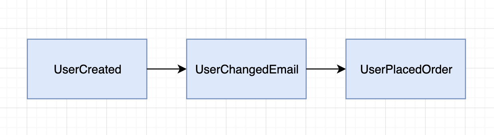

事件溯源也许很不错，但这确实增加了系统的复杂性。
什么是事件溯源
大多数 Web 应用将系统状态存放在数据库中。
假设让你来做一个在线购物网站的数据库设计，按照传统的数据库设计方案将会有 users、products 和 orders 表 —— 用来代表系统的状态。
再假设你完成了前期的编码工作并发布上线了这个在线购物网站，几周后你的老板想知道用户平均更新电子邮箱的次数。
在这种传统的数据库设计中，当用户更新电子邮箱时，执行的查询语句大致如下：
1 | UPDATE users SET email='newemail@mail.com' WHERE id=1; |
问题在于，我们并没有在数据库中存储修改电子邮件的事件日志。
你可以创建一个额外的列 event_log 并在每次用户更新电子邮箱后记录一次 user changed email。但这样仍存在一些问题：
- 需要额外的开发工作才能支持这个特性
- 使得数据库设计更加复杂
- 只有在实现这个功能后才能生成这些事件，无法对之前产生过的事件进行追溯
这是让事件溯源派上用场的绝佳场景。
根据事件溯源设计，你不需要存储系统状态。取而代之的是存储事件。
比如：当用户注册时，一个 UserCreated 事件被存储。之后当用户更新电子邮箱时，一个 UserChangedEmail 事件被存储。

为什么使用事件溯源
代表我们的思考方式
在现实世界里，人们思考的是事件：当其他人询问你今天过得怎么样时，你会告诉他们一些发生过的有趣事件，不大可能描述你在某一时刻的确切状态。
同样，一个领域专家在描述业务流程时谈论的也是一系列事件。通过事件溯源让我们在系统中对其建模变得更加容易。
容易生成报告
想知道用户修改了多少次电子邮箱？通过事件溯源，你已经将这些数据详尽记录在案了。
想知道一个商品在购物车中被用户移除了多少次？只需简单的对 EventRemovedFromCart 事件进行计算就可以了。
通过事件溯源，你可以对你的数据进行全方位的洞察，同时使生成的报告可以追溯。
你拥有了可靠的审计日志
你可以生成审计日志用来准确记录系统如何进入了某个状态。
比如，考虑一下你的银行账户，事件溯源生成了交易事件的日志，这样就可以清楚的说明为什么你每个月的工资都不够花了。
为什么不使用事件溯源
听起来不错，但事件溯源有什么要注意的呢？
事件溯源增加了系统额外的复杂性，更多的复杂性意味着难以让新进入的开发人员上手，花更多的时间添加新功能并且也让系统更难以维护。
如果你要构建的是一个规模较小的系统，不需要安全审计日志，此时使用事件溯源方法带来的麻烦可能比它的价值更大。